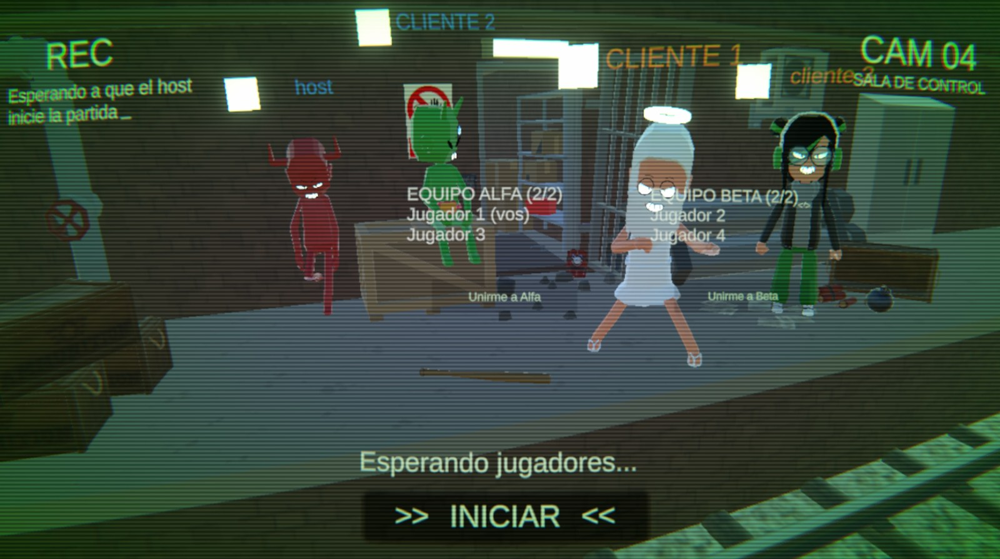
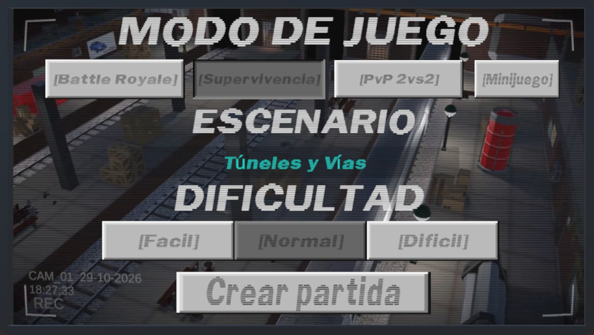

Battle Royale
Todos contra todos. El último que queda con vida gana.
El perímetro se cierra cada pocos segundos, así que nadie puede esconderse: todos terminan encontrándose en el centro de la arena.
Un juego de eliminación donde plantás bombas en una estación abandonada para eliminar a tus rivales.

Andén Cero transcurre en una estación de tren abandonada. Plantás bombas para destruir el escenario, abrirte camino, juntar power-ups y eliminar a tus rivales. La explosión daña a cualquiera, incluso a quien la puso.
El escenario cambia en cada partida, porque las cajas se acomodan en distribuciones distintas. No hay forma de memorizar el mapa.
Elegís el modo y el escenario antes de crear la partida. La dificultad se elige solo en Supervivencia.
Todos contra todos. El último que queda con vida gana.
El perímetro se cierra cada pocos segundos, así que nadie puede esconderse: todos terminan encontrándose en el centro de la arena.
Equipo Alfa contra equipo Beta.
Elegís tu equipo en la sala de espera. No hay fuego amigo: ni tu bomba ni la de tu compañero te hacen daño, así que podés armar jugadas juntos. Gana el equipo que deja sin vida a los dos rivales.
Oleadas de drones te atacan mientras te enfrentás a tus compañeros.
Cuanto más drones eliminás y más lejos llegás en las oleadas, mejor. La meta es superar tu récord de oleadas. Es el único modo con dificultad: Fácil, Normal o Difícil.
Caen bombas del cielo en un mapa chiquito y tenés que esquivarlas.
Cuanto más tiempo seguís con vida, mayor es tu récord.

Ganá sin plantar una sola bomba. Si lo lográs, se abre una parte del mapa de nuestro juego anterior, Escape del Laboratorio, con un clima oscuro y sombrío para explorar. Es un guiño para quienes nos siguen desde el principio.
Andén Cero fue creado por el Grupo 05 en la materia Laboratorio de Construcción de Software.
Product Owner: Luca Velazquez
Descargá la beta, descomprimila y ejecutá el juego. Para jugar online, uno crea la sala y comparte el código con los demás.
Descargar para Windows PC con Windows · Descarga externa